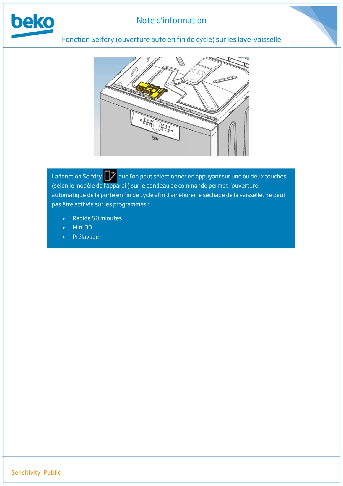

LAVE VAISSELLE fonction Selfdry ouverture de la porte auto en fin de cycle

Note d’informationFonction Selfdry (ouverture auto en fin de cycle) sur les lave-vaisselleSensitivity: PublicLa fonction Selfdry que l’on peut sélectionner en appuyant sur une ou deux touches(selon le modèle de l’appareil) sur le bandeau de commande permet l’ouvertureautomatique de la porte en fin de cycle afin d’améliorer le séchage de la vaisselle, ne peutpas être activée sur les programmes :•Rapide 58 minutes•Mini 30•Prélavage
1 / 1